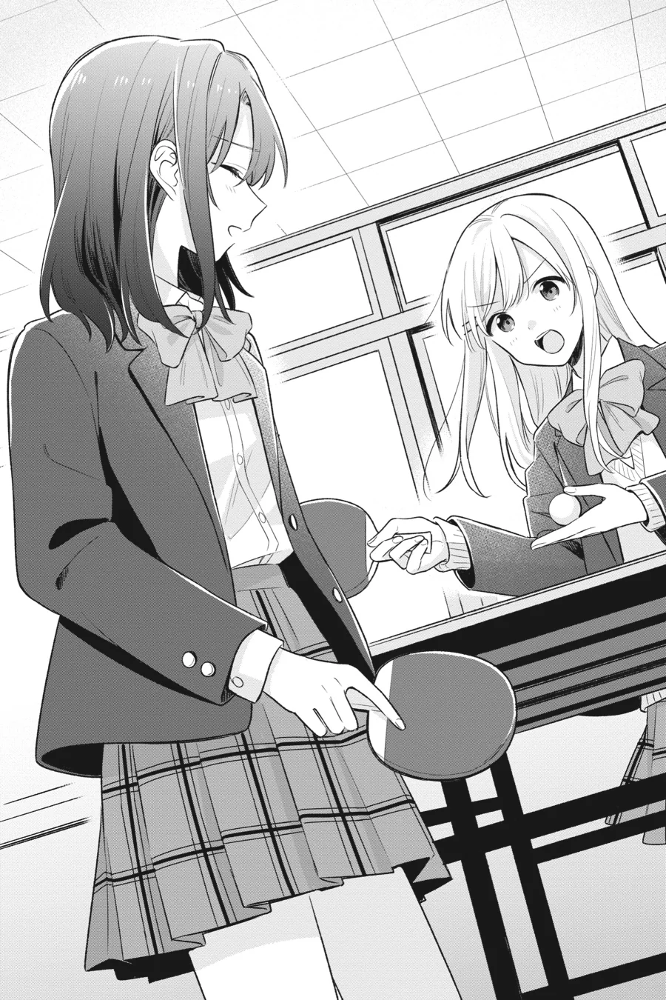
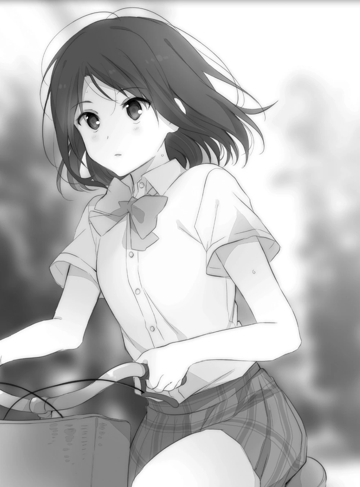
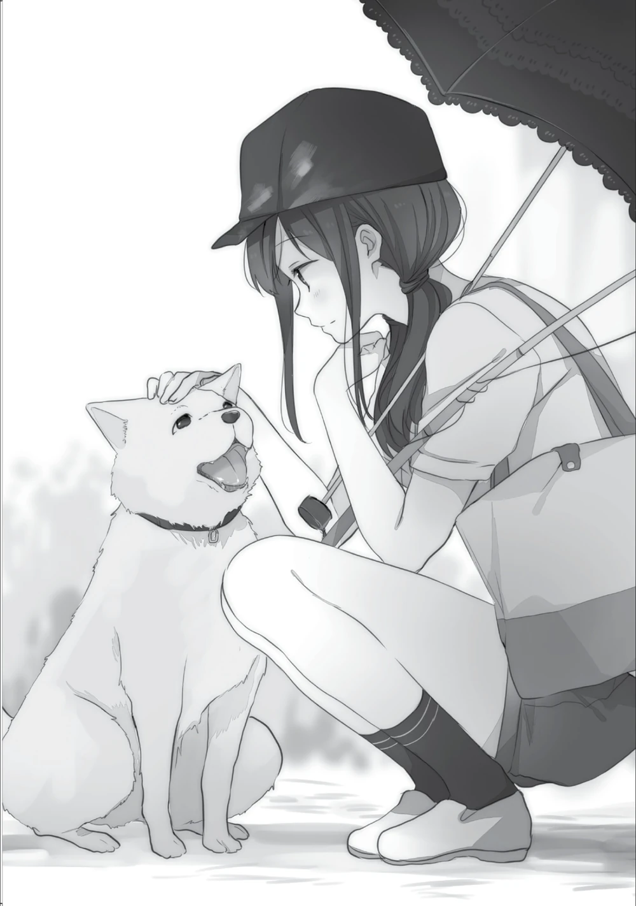
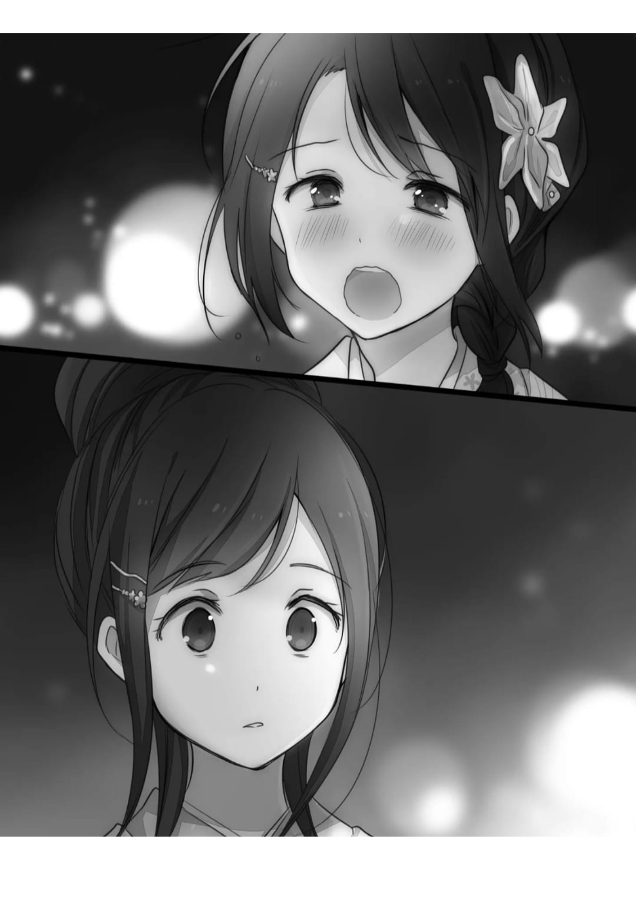
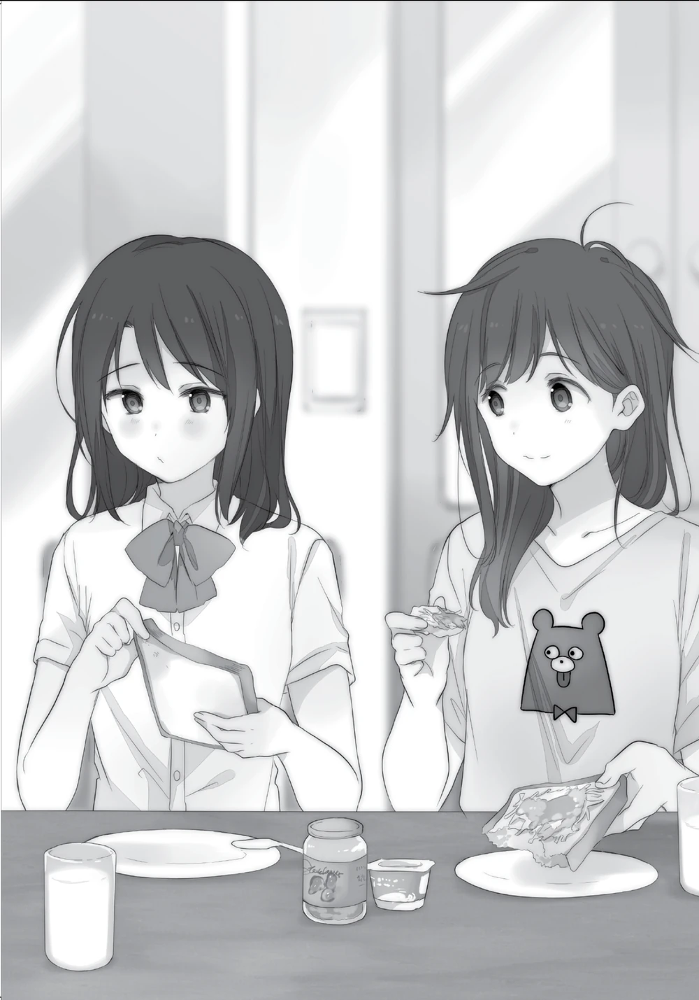
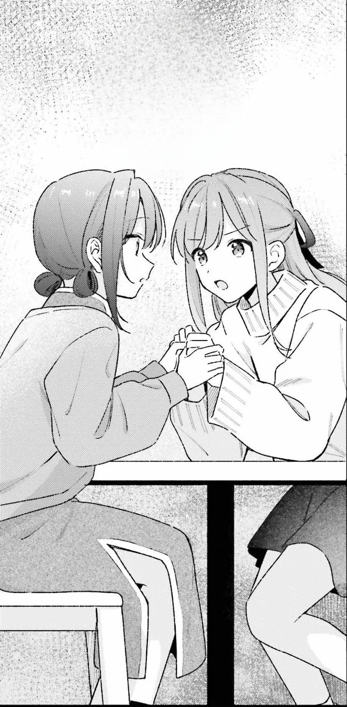
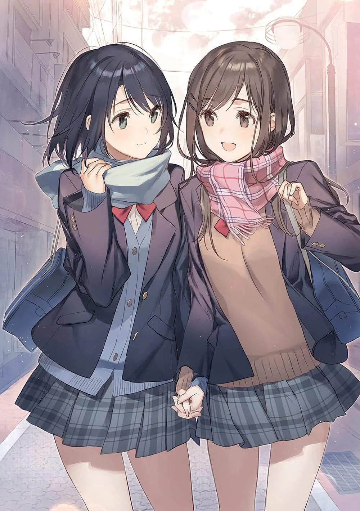
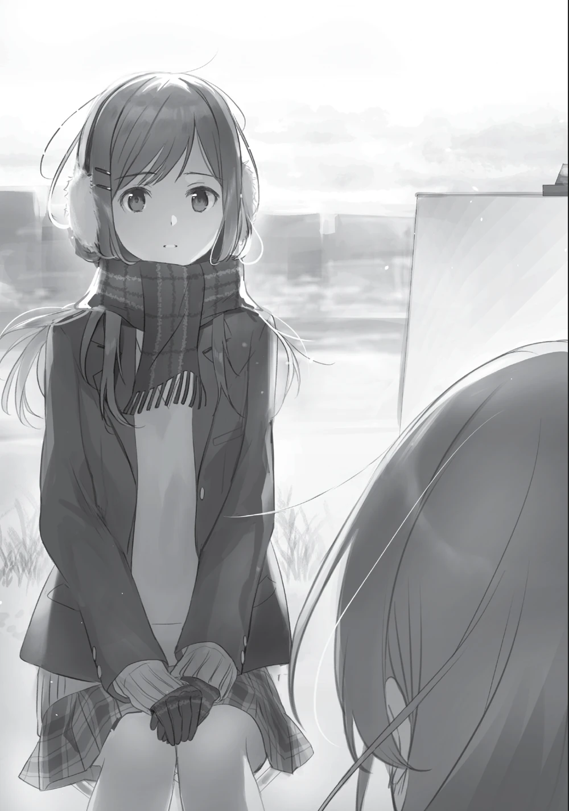

Línea del Tiempo
Adachi to Shimamura — Historia de su tiempo en la preparatoria
Primer Año Escolar
Primavera · Abril
10 de Abril
Cumpleaños de Shimamura
Shimamura cumple 16 años. Adachi tiene 15. Comienzan juntas el primer año de preparatoria, aunque aún no se conocen.

Volumen 1
Inicio de Septiembre
Se conocen en el segundo piso del gimnasio
Shimamura sube al segundo piso del gimnasio por primera vez y encuentra a Adachi, que ya está allí sentada sin zapatos, moviendo los pies. Adachi se sobresalta creyendo que es una profesora.
"Aunque no lo sabía entonces, ese había sido el primer día que Shimamura se había saltado la clase." (Volumen 1)
Volumen 2
Invierno · Diciembre
Primera Navidad
Adachi, que nunca ha salido con alguien en fechas especiales, pasa la Navidad junto a Shimamura por primera vez. Durante la cita recorren el centro comercial, juegan air hockey, intercambian regalos y Shimamura le regala a Adachi un boomerang.
"Pensé que era una percha rota. De cualquier manera, acepté el objeto azul en forma de V. Lo acepté..." (Volumen 2)
Volumen 3
Invierno · Febrero
Primer San Valentín e intercambio de chocolates
Adachi, muy nerviosa por la cercanía de San Valentín, invita a Shimamura a comprar chocolates. Durante la salida, tras leer el mensaje que Shimamura le había dejado: ¡Sigamos adelante, ahora y en el futuro!, Adachi incapaz de contener su emoción le da un abrazo.
"Lo que quiero decir es que estaba pensando en ti cuando lo envié. Es por eso que terminó así." (Volumen 3)
Segundo Año Escolar
Volumen 4
Primavera · Inicio de Abril
Comienzo del segundo año escolar
Adachi tiene 16 años y Shimamura 17. Comienza un nuevo año escolar con cambio de clases. Adachi teme que el nuevo año las separe o altere su relación.
"Ahora que lo pienso, esta es la primera vez que vamos a la escuela juntas, ¿no?" (Volumen 4)

Volumen 5
Inicio del Verano
Propuesta de Adachi
En el último día del período escolar, Adachi le expresa a Shimamura su deseo de aprovechar las vacaciones de verano para acercarse aún más a ella, marcando el inicio del verano más importante de sus vidas.
"Estaba pensando, sería bueno si pudiéramos usar las vacaciones de verano para estar aún más cerca. Sí." (Volumen 5)
"Fue allí, con esa sonrisa, que el verano comenzó ese año." (Volumen 5)

Volumen 5
Verano · Vacaciones de Verano
Pelea y reconciliación
Durante las vacaciones de verano, Adachi trabaja en un puesto durante un festival y ve que Shimamura está allí con una chica desconocida. La imagen la consume durante días, hasta que todo estalla en una llamada con Shimamura. Más tarde reúne el valor para volver a llamarla y acuerdan verse al día siguiente. La reconciliación llega con flores y un "volvemos a ser amigas", dejando a Adachi satisfecha e insatisfecha a la vez. Después, cumplen juntas la lista que Adachi había escrito.
"Creo que esta podría ser la primera vez que recibo flores." (Volumen 5)

Volumen 6
Verano · Obon
Viaje al campo
Justo cuando Adachi por fin ha recuperado el ritmo con Shimamura y quiere quedar con ella, Shimamura le dice que no puede, ese día su familia parte a casa de sus abuelos por el Obon.
"Oh, no, es porque vamos a la casa de mis abuelos. Ya sabes, el festival de Obon." (Volumen 6)

Volumen 6
Festival de Verano
Declaración de Adachi
Adachi finalmente se declara a Shimamura y le dice que la ama. Tras huir abrumada por la intensidad del momento, ambas terminan hablando a solas junto a un hotel.
"El yo de hoy quedó libre para tomar la siguiente decisión: 'Seguro, por qué no.'" (Volumen 6)

Volumen 7
Otoño · Septiembre
Primer día de clases como novias
Adachi aparece a primera hora de la mañana en casa de Shimamura, en uniforme escolar, para ir juntas a la escuela. Es el primer día del nuevo período.
"Ahora era primero de septiembre. La escuela comenzaría hoy." (Volumen 7)
"Me amas y yo te amo. ¿Verdad? Simple, ¿eh?" (Volumen 7)
"¿Por qué? Porque hacerlo fue lo que me llevó a conocer a Shimamura. Simplemente la idea de eso causó que el sol brillara sobre mi mundo. Para mí, septiembre fue equivalente al comienzo de un nuevo año." (Volumen 7)
Volumen 8
Otoño · Octubre
Viaje escolar a Kitakyushu
El viaje escolar de segundo año de preparatoria tiene como destino la ciudad de Kitakyushu. Al anunciarse los grupos de cinco personas, Adachi salta de su asiento y corre hasta el escritorio de Shimamura.
"Aparentemente, octubre era la temporada alta de viajes escolares para los estudiantes de segundo año de preparatoria." (Volumen 8)

Volumen 9
Invierno · Diciembre
Segunda Navidad
Adachi y Shimamura se citan bajo el gran árbol de Navidad del centro comercial, con Adachi luciendo de nuevo su llamativo vestido chino.
"Tan pronto como esas palabras salieron de mi boca, los recuerdos de nuestra Navidad anterior se apresuraron a llenar mi mente. Lo que recordé en particular fue el color azul." (Volumen 9)

Volumen 10
Invierno · Diciembre – Enero
Año Nuevo en casa de los abuelos
Shimamura viaja con su familia a casa de sus abuelos para pasar el Año Nuevo, como es tradición. En el jardín nocturno, planeaba llamar a Adachi para desearle feliz año.
"Estábamos visitando a mis abuelos para pasar el Año Nuevo, como era nuestra tradición anual. Para mí, esta era mi decimoséptima visita." (Volumen 10)

Volumen 10
Invierno · Febrero
Segundo San Valentín y despedida de Tarumi
Shimamura se reúne con Tarumi antes de San Valentín y le confiesa que tiene novia, poniendo fin a cualquier posibilidad romántica entre ellas. Poco después, Shimamura va con Adachi a Nagoya para comprar chocolates de San Valentín.
"Habíamos decidido encontrarnos en la estación. Era la segunda vez que me encontraba con alguien aquí en febrero. Esa vez, también había sido con una chica. La única diferencia era... sí. Dejémoslo así." (Volumen 10)
Tercer y Último Año Escolar
Primavera · Inicio de Abril
Comienzo del tercer y último año
Adachi tiene 17 años y Shimamura 18. Es el último año juntas en el instituto.
Volumen 12
Primavera · Finales del Curso
Plan para las últimas vacaciones de verano
Con las últimas vacaciones del instituto acercándose, Adachi propone ir juntas a la playa. Para costear el viaje, Shimamura acuerda con sus padres realizar las tareas del hogar a cambio de dinero.
"Se acercaban las vacaciones de verano. Nuestras últimas vacaciones de verano del instituto." (Volumen 12)
"Bien. Bueno, si aceptas hacer tareas domésticas en tus vacaciones de verano, puedo pagarte por adelantado." (Volumen 12)
Volumen 12
Verano · Inicio de las Vacaciones
Trabajo doméstico de Shimamura
"Soy Shimamura Hougetsu. Seré tu ama de casa durante el verano." (Volumen 12)
Volumen 11
Verano · Julio – Agosto
Estudio en casa de Shimamura
Con el pretexto de estudiar juntas para los exámenes, Adachi va a casa de Shimamura. Shimamura sabe perfectamente que no van a estudiar demasiado.
"Eran las vacaciones de verano de nuestro tercer año de instituto. Casi podías contar los días hasta la graduación con los dedos." (Volumen 11)
"Observé cómo el dedo de Adachi dibujaba círculos en el aire. Mientras se acercaba lentamente a mí, decidiendo dónde aterrizar, cerré los ojos." (Volumen 11)
"Cuando acaben las vacaciones de verano, habrá un festival cultural, ¿verdad?" (Volumen 11)
Volumen 12
Verano · Agosto (antes de Obon)
Viaje a la playa
Shimamura y Adachi van juntas a la playa, cumpliendo la promesa de verano.
"Hoy has estado muy ocupada. ¿Vas a algún sitio mañana?"
"¡Se va de viaje a la playa con una mujer!" (Volumen 12)
Volumen 13
Verano · Inicio de Agosto · Obon
Visita a los abuelos · Últimas vacaciones
Shimamura viaja con su familia a casa de sus abuelos durante el Obon, como hace cada año. Esta vez también va Yashiro, disfrazada de tanuki. Son las últimas vacaciones de verano de su vida como estudiante de preparatoria.
"A inicios de agosto, durante las últimas vacaciones de verano de mi vida como estudiante de preparatoria. Era la época en que la gente regresaba al campo." (Volumen 13)
Volumen 13
Otoño · Inicio de Septiembre
Festival cultural escolar
Regresa el período escolar, junto con la noticia de que hay un festival cultural escolar.
"Ya es septiembre, y aunque la voz de las cigarras ya casi no se oye, aún se escucha." (Volumen 13)
"Un nuevo período escolar comienza, dejando el verano atrás. Hace dos años, desde este mismo punto, empecé a desviarme hacia el segundo piso del gimnasio y hasta me teñí el cabello de rubio. Pero gracias a aquellos desvíos inesperados, tuve un encuentro inesperado que me llevó a donde estoy ahora. Quizá ese encuentro sea uno de esos que cambian la vida para siempre." (Volumen 13)